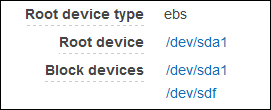

Block Device Mapping
Each instance that you launch has an associated root device volume, either an Amazon EBS volume or an instance store volume. You can use block device mapping to specify additional EBS volumes or instance store volumes to attach to an instance when it's launched. You can also attach additional EBS volumes to a running instance; see Attaching an Amazon EBS Volume to an Instance. However, the only way to attach instance store volumes to an instance is to use block device mapping to attach them as the instance is launched.
For more information about root device volumes, see Changing the Root Device Volume to Persist.
Block Device Mapping Concepts
A block device is a storage device that moves data in sequences of bytes or bits (blocks). These devices support random access and generally use buffered I/O. Examples include hard disks, CD-ROM drives, and flash drives. A block device can be physically attached to a computer or accessed remotely as if it were physically attached to the computer. Amazon EC2 supports two types of block devices:
-
Instance store volumes (virtual devices whose underlying hardware is physically attached to the host computer for the instance)
-
EBS volumes (remote storage devices)
A block device mapping defines the block devices (instance store volumes and EBS volumes) to attach to an instance. You can specify a block device mapping as part of creating an AMI so that the mapping is used by all instances launched from the AMI. Alternatively, you can specify a block device mapping when you launch an instance, so this mapping overrides the one specified in the AMI from which you launched the instance. Note that all NVMe instance store volumes supported by an instance type are automatically enumerated and assigned a device name on instance launch; including them in your block device mapping has no effect.
Contents
Block Device Mapping Entries
When you create a block device mapping, you specify the following information for each block device that you need to attach to the instance:
-
The device name used within Amazon EC2. The block device driver for the instance assigns the actual volume name when mounting the volume, and the name assigned can be different from the name that Amazon EC2 recommends. For more information, see Device Naming on Linux Instances.
-
[Instance store volumes] The virtual device:
ephemeral[0-23]. Note that the number and size of available instance store volumes for your instance varies by instance type. -
[NVMe instance store volumes] These volumes are automatically enumerated and assigned a device name; including them in your block device mapping has no effect.
-
[EBS volumes] The ID of the snapshot to use to create the block device (snap-xxxxxxxx). This value is optional as long as you specify a volume size.
-
[EBS volumes] The size of the volume, in GiB. The specified size must be greater than or equal to the size of the specified snapshot.
-
[EBS volumes] Whether to delete the volume on instance termination (
trueorfalse). The default value istruefor the root device volume andfalsefor attached volumes. When you create an AMI, its block device mapping inherits this setting from the instance. When you launch an instance, it inherits this setting from the AMI. -
[EBS volumes] The volume type, which can be
gp2for General Purpose SSD,io1for Provisioned IOPS SSD,st1for Throughput Optimized HDD,sc1for Cold HDD, orstandardfor Magnetic. The default value isgp2in the Amazon EC2 console, andstandardin the AWS SDKs and the AWS CLI. -
[EBS volumes] The number of input/output operations per second (IOPS) that the volume supports. (Not used with
gp2,st1,sc1, orstandardvolumes.)
Block Device Mapping Instance Store Caveats
There are several caveats to consider when launching instances with AMIs that have instance store volumes in their block device mappings.
-
Some instance types include more instance store volumes than others, and some instance types contain no instance store volumes at all. If your instance type supports one instance store volume, and your AMI has mappings for two instance store volumes, then the instance launches with one instance store volume.
-
Instance store volumes can only be mapped at launch time. You cannot stop an instance without instance store volumes (such as the
t2.micro), change the instance to a type that supports instance store volumes, and then restart the instance with instance store volumes. However, you can create an AMI from the instance and launch it on an instance type that supports instance store volumes, and map those instance store volumes to the instance. -
If you launch an instance with instance store volumes mapped, and then stop the instance and change it to an instance type with fewer instance store volumes and restart it, the instance store volume mappings from the initial launch still show up in the instance metadata. However, only the maximum number of supported instance store volumes for that instance type are available to the instance.
Note
When an instance is stopped, all data on the instance store volumes is lost.
-
Depending on instance store capacity at launch time, M3 instances may ignore AMI instance store block device mappings at launch unless they are specified at launch. You should specify instance store block device mappings at launch time, even if the AMI you are launching has the instance store volumes mapped in the AMI, to ensure that the instance store volumes are available when the instance launches.
Example Block Device Mapping
This figure shows an example block device mapping for an EBS-backed instance. It maps
/dev/sdb to ephemeral0 and maps two EBS volumes,
one to /dev/sdh and the other to /dev/sdj. It also
shows the EBS volume that is the root device volume, /dev/sda1.
Note that this example block device mapping is used in the example commands and APIs in this topic. You can find example commands and APIs that create block device mappings in Specifying a Block Device Mapping for an AMI and Updating the Block Device Mapping when Launching an Instance.
How Devices Are Made Available in the Operating System
Device names like /dev/sdh and xvdh are used
by Amazon EC2 to describe block devices. The block device mapping is used by Amazon
EC2 to specify the
block devices to attach to an EC2 instance. After a block device is attached to an
instance,
it must be mounted by the operating system before you can access the storage device.
When a
block device is detached from an instance, it is unmounted by the operating system
and you
can no longer access the storage device.
With a Linux instance, the device names specified in the block device mapping are mapped to their corresponding block devices when the instance first boots. The instance type determines which instance store volumes are formatted and mounted by default. You can mount additional instance store volumes at launch, as long as you don't exceed the number of instance store volumes available for your instance type. For more information, see Amazon EC2 Instance Store. The block device driver for the instance determines which devices are used when the volumes are formatted and mounted. For more information, see Attaching an Amazon EBS Volume to an Instance.
AMI Block Device Mapping
Each AMI has a block device mapping that specifies the block devices to attach to an instance when it is launched from the AMI. An AMI that Amazon provides includes a root device only. To add more block devices to an AMI, you must create your own AMI.
Contents
Specifying a Block Device Mapping for an AMI
There are two ways to specify volumes in addition to the root volume when you create an AMI. If you've already attached volumes to a running instance before you create an AMI from the instance, the block device mapping for the AMI includes those same volumes. For EBS volumes, the existing data is saved to a new snapshot, and it's this new snapshot that's specified in the block device mapping. For instance store volumes, the data is not preserved.
For an EBS-backed AMI, you can add EBS volumes and instance store volumes using a block device mapping. For an instance store-backed AMI, you can add instance store volumes only by modifying the block device mapping entries in the image manifest file when registering the image.
Note
For M3 instances, you must specify instance store volumes in the block device mapping for the instance when you launch it. When you launch an M3 instance, instance store volumes specified in the block device mapping for the AMI may be ignored if they are not specified as part of the instance block device mapping.
To add volumes to an AMI using the console
-
Open the Amazon EC2 console.
-
In the navigation pane, choose Instances.
-
Select an instance and choose Actions, Image, Create Image.
-
In the Create Image dialog box, choose Add New Volume.
-
Select a volume type from the Type list and a device name from the Device list. For an EBS volume, you can optionally specify a snapshot, volume size, and volume type.
-
Choose Create Image.
To add volumes to an AMI using the command line
Use the create-image AWS CLI command to specify a block device mapping for an EBS-backed AMI. Use the register-image AWS CLI command to specify a block device mapping for an instance store-backed AMI.
Specify the block device mapping using the following parameter:
--block-device-mappings [mapping, ...]
To add an instance store volume, use the following mapping:
{ "DeviceName": "/dev/sdf", "VirtualName": "ephemeral0" }
To add an empty 100 GiB Magnetic volume, use the following mapping:
{ "DeviceName": "/dev/sdg", "Ebs": { "VolumeSize": 100 } }
To add an EBS volume based on a snapshot, use the following mapping:
{ "DeviceName": "/dev/sdh", "Ebs": { "SnapshotId": "snap-xxxxxxxx" } }
To omit a mapping for a device, use the following mapping:
{ "DeviceName": "/dev/sdj", "NoDevice": "" }
Alternatively, you can use the -BlockDeviceMapping parameter with the
following commands (AWS Tools for Windows PowerShell):
Viewing the EBS Volumes in an AMI Block Device Mapping
You can easily enumerate the EBS volumes in the block device mapping for an AMI.
To view the EBS volumes for an AMI using the console
-
Open the Amazon EC2 console.
-
In the navigation pane, choose AMIs.
-
Choose EBS images from the Filter list to get a list of EBS-backed AMIs.
-
Select the desired AMI, and look at the Details tab. At a minimum, the following information is available for the root device:
-
Root Device Type (
ebs) -
Root Device Name (for example,
/dev/sda1) -
Block Devices (for example,
/dev/sda1=snap-1234567890abcdef0:8:true)
If the AMI was created with additional EBS volumes using a block device mapping, the Block Devices field displays the mapping for those additional volumes as well. (Recall that this screen doesn't display instance store volumes.)
-
To view the EBS volumes for an AMI using the command line
Use the describe-images (AWS CLI) command or Get-EC2Image (AWS Tools for Windows PowerShell) command to enumerate the EBS volumes in the block device mapping for an AMI.
Instance Block Device Mapping
By default, an instance that you launch includes any storage devices specified in the block device mapping of the AMI from which you launched the instance. You can specify changes to the block device mapping for an instance when you launch it, and these updates overwrite or merge with the block device mapping of the AMI.
Limits
-
For the root volume, you can only modify the following: volume size, volume type, and the Delete on Termination flag.
-
When you modify an EBS volume, you can't decrease its size. Therefore, you must specify a snapshot whose size is equal to or greater than the size of the snapshot specified in the block device mapping of the AMI.
Contents
Updating the Block Device Mapping when Launching an Instance
You can add EBS volumes and instance store volumes to an instance when you launch it. Note that updating the block device mapping for an instance doesn't make a permanent change to the block device mapping of the AMI from which it was launched.
To add volumes to an instance using the console
-
Open the Amazon EC2 console.
-
From the dashboard, choose Launch Instance.
-
On the Choose an Amazon Machine Image (AMI) page, select the AMI to use and choose Select.
-
Follow the wizard to complete the Choose an Instance Type and Configure Instance Details pages.
-
On the Add Storage page, you can modify the root volume, EBS volumes, and instance store volumes as follows:
-
To change the size of the root volume, locate the Root volume under the Type column, and change its Size field.
-
To suppress an EBS volume specified by the block device mapping of the AMI used to launch the instance, locate the volume and click its Delete icon.
-
To add an EBS volume, choose Add New Volume, choose EBS from the Type list, and fill in the fields (Device, Snapshot, and so on).
-
To suppress an instance store volume specified by the block device mapping of the AMI used to launch the instance, locate the volume, and choose its Delete icon.
-
To add an instance store volume, choose Add New Volume, select Instance Store from the Type list, and select a device name from Device.
-
-
Complete the remaining wizard pages, and choose Launch.
To add volumes to an instance using the command line
Use the run-instances AWS CLI command to specify a block device mapping for an instance.
Specify the block device mapping using the following parameter:
--block-device-mappings [mapping, ...]
For example, suppose that an EBS-backed AMI specifies the following block device mapping:
-
/dev/sdb=ephemeral0
-
/dev/sdh=snap-1234567890abcdef0
-
/dev/sdj=:100
To prevent /dev/sdj from attaching to an instance launched from this AMI, use the following
mapping:
{ "DeviceName": "/dev/sdj", "NoDevice": "" }
To increase the size of /dev/sdh to 300 GiB, specify the following mapping. Notice that you don't need to
specify the snapshot ID for /dev/sdh, because specifying the device name is enough to identify the
volume.
{ "DeviceName": "/dev/sdh", "Ebs": { "VolumeSize": 300 } }
To attach an additional instance store volume, /dev/sdc, specify the following mapping.
If the instance type doesn't support multiple instance store volumes, this mapping
has no
effect.
{ "DeviceName": "/dev/sdc", "VirtualName": "ephemeral1" }
Alternatively, you can use the -BlockDeviceMapping parameter with the
New-EC2Instance command
(AWS Tools for Windows PowerShell).
Updating the Block Device Mapping of a Running Instance
You can use the following modify-instance-attribute AWS CLI command to update the block device mapping of a running instance. Note that you do not need to stop the instance before changing this attribute.
aws ec2 modify-instance-attribute --instance-id i-1a2b3c4d--block-device-mappings file://mapping.json
For example, to preserve the root volume at instance termination, specify the following
in mapping.json:
[ { "DeviceName": "/dev/sda1", "Ebs": { "DeleteOnTermination": false } } ]
Alternatively, you can use the -BlockDeviceMapping parameter with the
Edit-EC2InstanceAttribute command (AWS Tools for Windows PowerShell).
Viewing the EBS Volumes in an Instance Block Device Mapping
You can easily enumerate the EBS volumes mapped to an instance.
Note
For instances launched before the release of the 2009-10-31 API, AWS can't display the block device mapping. You must detach and reattach the volumes so that AWS can display the block device mapping.
To view the EBS volumes for an instance using the console
-
Open the Amazon EC2 console.
-
In the navigation pane, choose Instances.
-
In the search bar, type Root Device Type, and then choose EBS. This displays a list of EBS-backed instances.
-
Select the desired instance and look at the details displayed in the Description tab. At a minimum, the following information is available for the root device:
-
Root device type (
ebs) -
Root device (for example,
/dev/sda1) -
Block devices (for example,
/dev/sda1,/dev/sdh, and/dev/sdj)
If the instance was launched with additional EBS volumes using a block device mapping, the Block devices field displays those additional volumes as well as the root device. (Recall that this dialog box doesn't display instance store volumes.)
 -
-
To display additional information about a block device, select its entry next to Block devices. This displays the following information for the block device:
-
EBS ID (vol-xxxxxxxx)
-
Root device type (
ebs) -
Attachment time (yyyy-mmThh:mm:ss.ssTZD)
-
Block device status (
attaching,attached,detaching,detached) -
Delete on termination (
Yes,No)
-
To view the EBS volumes for an instance using the command line
Use the describe-instances (AWS CLI) command or Get-EC2Instance (AWS Tools for Windows PowerShell) command to enumerate the EBS volumes in the block device mapping for an instance.
Viewing the Instance Block Device Mapping for Instance Store Volumes
When you view the block device mapping for your instance, you can see only the EBS
volumes, not the instance store volumes. You can use instance metadata to query the
complete
block device mapping. The base URI for all requests for instance metadata is
http://169.254.169.254/latest/.
First, connect to your running instance. From the instance, use this query to get its block device mapping.
[ec2-user ~]$curl http://169.254.169.254/latest/meta-data/block-device-mapping/
The response includes the names of the block devices for the instance. For example,
the
output for an instance store–backed m1.small instance looks like
this.
ami ephemeral0 root swap
The ami device is the root device as seen by the instance. The instance
store volumes are named ephemeral[0-23]. The swap device
is for the page file. If you've also mapped EBS volumes, they appear as ebs1,
ebs2, and so on.
To get details about an individual block device in the block device mapping, append its name to the previous query, as shown here.
[ec2-user ~]$curl http://169.254.169.254/latest/meta-data/block-device-mapping/ephemeral0
For more information, see Instance Metadata and User Data.